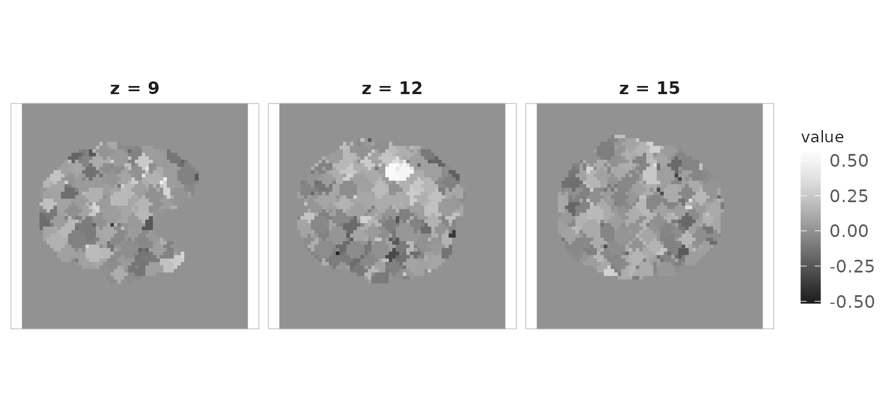

Regions and searchlights
Source:vignettes/regions-and-searchlights.Rmd
regions-and-searchlights.RmdNearly every analysis in this package has the same three steps: define a spatial support, extract values from it, reduce them to something smaller. What changes is the support — one sphere, an atlas of parcels, or a sphere centred on every voxel in turn. This article covers all three, and ends with a searchlight analysis whose answer we can check.
mask <- demo_mask()
brain <- as.mask(mask > 0)
bold <- demo_bold(n_time = 40)
sum(brain)
#> [1] 29532One region
spherical_roi() is the constructor most others build on.
The centre is a voxel index, the radius is in millimetres, and
nonzero = TRUE discards anything outside the mask:
roi <- spherical_roi(mask, c(32, 32, 12), radius = 8, nonzero = TRUE)
length(roi)
#> [1] 49
head(coords(roi), 3)
#> [,1] [,2] [,3]
#> [1,] 30 31 12
#> [2,] 30 32 11
#> [3,] 30 32 12nonzero only bites near the edge of the mask. Deep
inside the brain it has nothing to remove; at the boundary it removes a
great deal:
edge <- c(20, 10, 4)
c(
all = length(spherical_roi(mask, edge, radius = 8)),
in_mask = length(spherical_roi(mask, edge, radius = 8, nonzero = TRUE))
)
#> all in_mask
#> 49 10An ROI knows three things: where its voxels are
(coords()), their linear positions
(indices()), and what is stored in them
(values()). Pulling a region’s time courses out of a 4D
image is series_roi():
rts <- series_roi(bold, roi)
dim(values(rts))
#> [1] 40 49That matrix is scans by voxels — the transpose of
as.matrix() on a NeuroVec, so check which one
you have before reducing.
Two other shapes are available. cuboid_roi() gives a
box, square_roi() a plane within one slice:
sp <- NeuroSpace(c(20L, 20L, 20L), c(1, 1, 1))
length(cuboid_roi(sp, c(10, 10, 10), surround = 3))
#> [1] 343
length(square_roi(sp, c(10, 10, 10), surround = 2, fixdim = 3))
#> [1] 25spherical_roi_set() is the convenience wrapper for a
list of centres — it loops over spherical_roi() internally,
so expect convenience rather than speed:
centres <- rbind(c(20, 20, 10), c(40, 40, 14), c(32, 32, 12))
rois <- spherical_roi_set(mask, centroids = centres, radius = 8, nonzero = TRUE)
lengths(lapply(rois, indices))
#> [1] 49 49 49Leave fill alone unless you want constant-valued ROIs:
setting it replaces the image data with that constant.
Combining regions
ROIs combine through their indices, so the ordinary set operations apply:
a <- spherical_roi(mask, c(32, 32, 12), radius = 8, nonzero = TRUE)
b <- spherical_roi(mask, c(35, 32, 12), radius = 8, nonzero = TRUE)
c(
intersection = length(intersect(indices(a), indices(b))),
union = length(union(indices(a), indices(b))),
only_a = length(setdiff(indices(a), indices(b)))
)
#> intersection union only_a
#> 10 88 39Many regions: parcels
When the support comes from an atlas, a
ClusteredNeuroVol holds the assignment: one label per
in-mask voxel.
set.seed(1)
parcels <- ClusteredNeuroVol(brain, sample(1:12, sum(brain), replace = TRUE))
num_clusters(parcels)
#> [1] 12split_clusters() cuts a 4D image into one object per
parcel:
parts <- split_clusters(bold, parcels)
length(parts)
#> [1] 12
dim(values(parts[[1]]))
#> [1] 40 2446split_reduce() goes straight to the summary, returning
parcels by time in one step — the usual way to get an atlas time-series
matrix:
labels <- integer(prod(dim(mask)))
labels[which(as.vector(brain))] <- parcels@clusters
parcel_ts <- split_reduce(bold, factor(labels))
dim(parcel_ts)
#> [1] 13 40
rownames(parcel_ts)
#> [1] "0" "1" "2" "3" "4" "5" "6" "7" "8" "9" "10" "11" "12"split_reduce() wants one label per voxel in the whole
grid, so out-of-mask voxels become a group of their own — row
"0" above, which you drop. Build the label vector as
integers and factor it at the end. Assigning into an existing factor
instead turns every assigned element into NA, with a
warning (invalid factor level, NA generated) that is easy
to miss if warnings are suppressed.
The default reduction is the mean; pass FUN for anything
else.
Every region: searchlights
A searchlight puts a sphere at every voxel in the mask. There are three flavours, and the difference is coverage, not shape.
searchlight() centres one on each voxel — complete but
overlapping. Built lazily, neighbourhoods are realised only when
touched:
sl <- searchlight(brain, radius = 8, eager = FALSE, nonzero = TRUE)
length(sl)
#> [1] 29532
nrow(coords(sl[[1]]))
#> [1] 18random_searchlight() partitions the mask into
non-overlapping spheres, which covers every voxel exactly once
for a fraction of the work:
set.seed(42)
rsl <- random_searchlight(brain, radius = 8)
length(rsl)
#> [1] 1579
summary(lengths(lapply(rsl, indices)))
#> Min. 1st Qu. Median Mean 3rd Qu. Max.
#> 1.0 5.0 15.0 18.7 30.0 49.0Note the spread. Because the spheres tile rather than overlap, those at the mask edge are truncated — some hold a single voxel. Any statistic you compare across searchlights has to survive that, which is the main reason the analysis below is read at the cluster level rather than at its single brightest voxel.
clustered_searchlight() uses a parcellation instead of
spheres, giving one neighbourhood per parcel:
length(clustered_searchlight(brain, cvol = parcels))
#> [1] 12A searchlight analysis that finds something
Averaging noise proves nothing, so here is a searchlight with a right answer. We plant a task response in one sphere, then ask a searchlight to find it.
design <- demo_design(40)
target <- spherical_roi(mask, c(20, 34, 12), radius = 12, nonzero = TRUE)
Y <- as.matrix(bold)
Y[indices(target), ] <- Y[indices(target), ] +
1.3 * rep(design, each = length(target))
planted <- DenseNeuroVec(Y, space(bold))
length(target)
#> [1] 163Now score each searchlight by how well its voxels track the design.
This is the map step, and it is an ordinary sapply() over
the neighbourhoods:
score <- sapply(rsl, function(r) mean(cor(values(series_roi(planted, r)), design)))
range(score)
#> [1] -0.5147689 0.5528228Writing the scores back to their voxels turns a list of numbers into an image again:
arr <- array(0, dim(mask))
for (i in seq_along(rsl)) arr[coords(rsl[[i]])] <- score[i]
score_map <- NeuroVol(arr, space(mask))Because random_searchlight() tiles the brain with
disjoint spheres, this map is piecewise constant — every voxel in a
sphere carries its sphere’s score. Use searchlight()
instead when you want a smoothly varying map, at the cost of one
neighbourhood per voxel rather than one per sphere.
Did it work? Compare the planted region against the rest of the brain, in units of the background’s own spread:
outside_idx <- setdiff(which(as.vector(brain)), indices(target))
inside <- as.vector(score_map)[indices(target)]
outside <- as.vector(score_map)[outside_idx]
c(inside = mean(inside), outside = mean(outside), sd_outside = sd(outside),
z = (mean(inside) - mean(outside)) / sd(outside))
#> inside outside sd_outside z
#> 0.35817828 0.02258644 0.10519799 3.19009738The planted region sits about three background standard deviations up — a real effect, and a modest one. Resist reading the single brightest voxel: with neighbourhoods this ragged the maximum is often a two-voxel searchlight at the mask edge, and which voxel wins changes with the tiling.

Searchlight score map. The bright cluster is where the signal was planted.
The default intensity range matters here. Passing
irange = c(0, max(score)) would put the negative half of
the map outside the scale limits, where it renders transparent — reading
as maximum signal rather than as no signal.
From a map back to regions
conn_comp() turns a thresholded map into labelled
clusters, which closes the loop — a result becomes the support for the
next analysis. Ask for cluster_table = TRUE to get one row
per cluster:
cc <- conn_comp(score_map, threshold = 0.35, cluster_table = TRUE)
head(cc$cluster_table[order(-cc$cluster_table$N), ], 4)
#> index x y z N Area value
#> 1 1 20 31 11 133 6028.225 0.5528228
#> 2 2 27 14 3 18 815.850 0.4631651
#> 3 3 39 32 1 4 181.300 0.3624168
#> 4 4 23 41 8 3 135.975 0.4633262The largest cluster is an order of magnitude bigger than anything
else and its peak sits beside the centre we planted at
(20, 34, 12). cc$voxels holds the coordinates
of each one, so a cluster can become an ROI immediately.
Note that cc$size is a volume, not a
per-cluster vector: every voxel holds the size of the cluster it belongs
to. Use cluster_table$N when you want one number per
cluster.
Iterating without ROIs
Sometimes the pieces are the container’s own: slices of a volume,
volumes of a series, or the time course at every voxel.
slices(), vols() and vectors()
give you those directly.
anat <- demo_anatomy()
slice_means <- vapply(slices(anat), mean, numeric(1))
length(slice_means)
#> [1] 48
vol_means <- vapply(vols(bold), mean, numeric(1))
length(vol_means)
#> [1] 40vectors() iterates voxel time courses, so mapping over
it and rewrapping gives a volume:
Doing it in parallel
Searchlight scoring is embarrassingly parallel. neuroim2 imports
future, so the change is one line of setup and
future_sapply() in place of sapply():
library(future.apply)
plan(multisession, workers = 4)
score <- future_sapply(rsl, function(r) {
mean(cor(values(series_roi(planted, r)), design))
})
plan(sequential)future exports the globals your function references
automatically, so this works — but it also means planted is
serialised to every worker. On a real dataset that transfer can dominate
the computation, so keep large objects out of the closure where you can,
and prefer fewer, larger tasks over many tiny ones.
Which support should you use?
| Situation | Use |
|---|---|
| One hypothesis-driven region | spherical_roi() |
| Many known coordinates | spherical_roi_set() |
| A box or a single plane |
cuboid_roi(),
square_roi()
|
| An atlas or clustering |
ClusteredNeuroVol +
split_clusters()
|
| An atlas time-series matrix | split_reduce() |
| Whole-brain, overlapping | searchlight() |
| Whole-brain, one pass, cheaper | random_searchlight() |
| Whole-brain at parcel resolution | clustered_searchlight() |
| Clusters from a thresholded map | conn_comp() |
Where to go next
-
vignette("visualization")— drawing maps like the one above -
vignette("large-data")— parcel-level representations when voxelwise is too big -
?spherical_roi,?searchlight,?split_reduce,?conn_comp